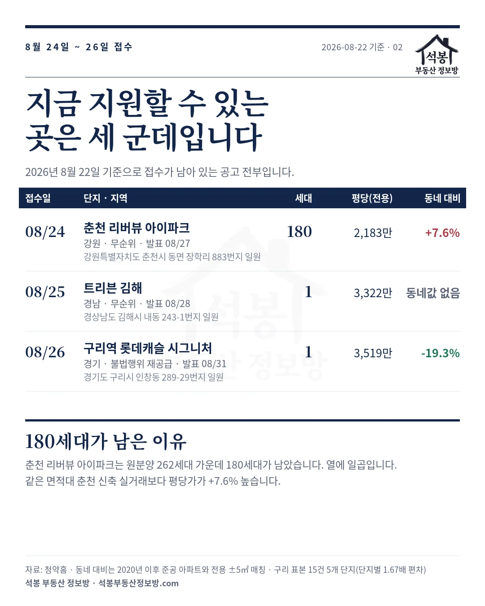
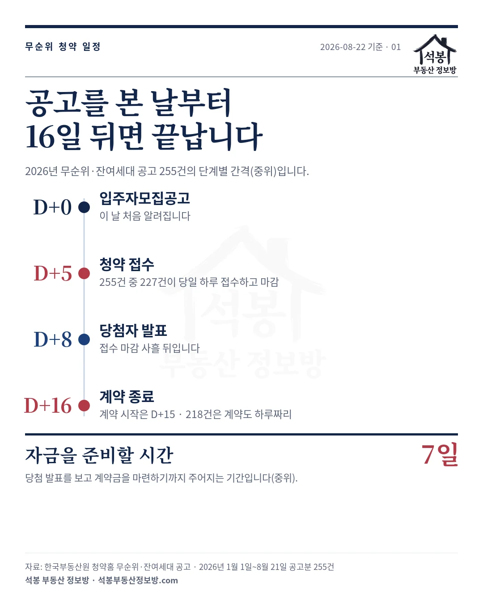
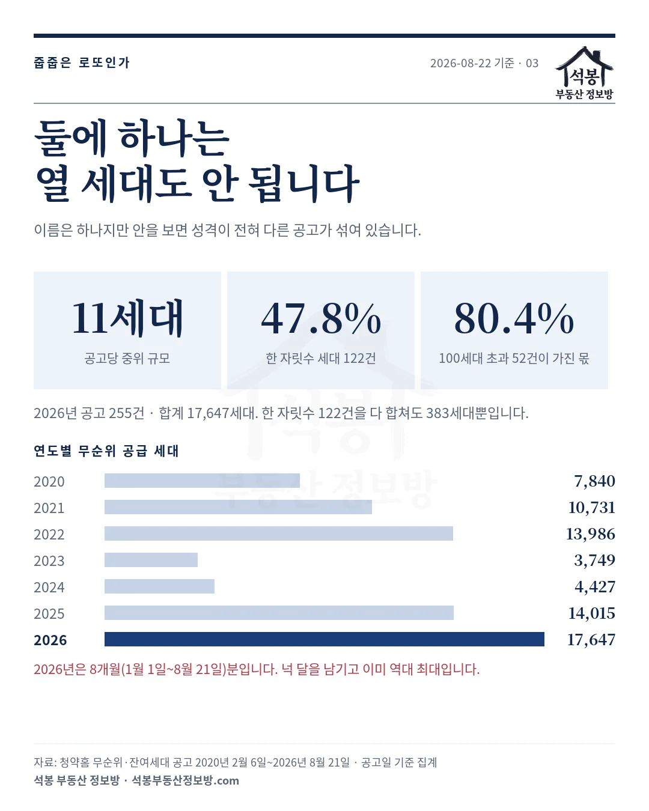
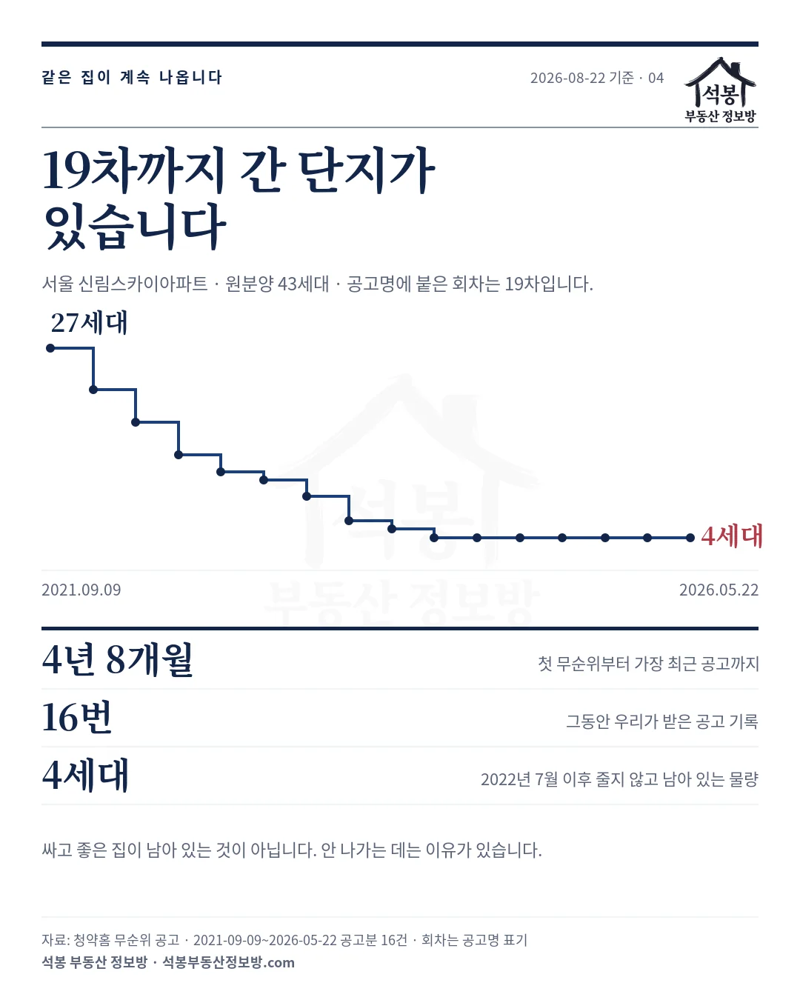

청약통장도 가점도 안 보니까 「줍줍」이라는 말이 붙었습니다. 그런데 2026년 무순위 공고 255건의 날짜를 세어 보니 공고가 뜨고 계약이 끝나기까지 중위 16일이었습니다. 접수는 227건이 하루 만에 마감했고, 당첨 발표 뒤 계약금을 마련할 시간은 이레였습니다. 8월 24일부터 26일까지 접수하는 세 곳을 그 시계 위에 올려 보겠습니다.
하나. 2026년 8월 22일 기준, 남은 곳은 세 군데입니다
접수가 아직 끝나지 않은 무순위 공고는 전국에 셋뿐인데, 성격이 전부 다릅니다.
| 접수일 | 단지 | 지역 | 세대 | 평당(전용) | 동네 신축 대비 |
|---|---|---|---|---|---|
| 8월 24일 | 춘천 리버뷰 아이파크 | 강원 | 180 | 2,183만원 | +7.6% |
| 8월 25일 | 트리븐 김해 | 경남 | 1 | 3,322만원 | 비교 거래 없음 |
| 8월 26일 | 구리역 롯데캐슬 시그니처 | 경기 | 1 | 3,519만원 | -19.3% |
세 곳 모두 접수가 하루입니다. 발표는 8월 27일·28일·31일, 계약일은 9월 3일·8월 31일·9월 7일입니다. 읽으시는 시점에 이미 지난 날짜가 있다면, 무순위 일정이 원래 그만큼 짧다는 뜻입니다.

가입하시면 지역 시장조사 보고서(약식)를 2회 무료로 요청하실 수 있습니다.
둘. 16일짜리 시계를 역산해 두셔야 합니다
2026년 1월 1일부터 8월 21일까지 나온 공고 255건의 단계별 간격입니다. 중위 기준입니다.
| 단계 | 간격 | 실제 분포 |
|---|---|---|
| 공고 → 접수 시작 | 5일 | 가장 빠른 것이 3일, 가장 느린 것이 10일 |
| 접수 기간 | 0일 | 255건 중 227건이 당일 접수하고 그날 마감 |
| 접수 마감 → 당첨 발표 | 3일 | 3일에서 8일 사이 |
| 발표 → 계약 시작 | 7일 | 가장 짧은 것이 하루, 가장 긴 것이 38일 |
| 계약 기간 | 0일 | 255건 중 218건이 계약도 하루짜리 |
| 공고 → 계약 종료 | 16일 | 가장 짧은 것이 9일, 가장 긴 것이 49일 |
공고를 보고 닷새 안에 지원 여부를 정하고, 접수는 그날 하루에 끝내야 합니다. 당첨은 여드레째에 알게 되고 이레 뒤에 계약금을 들고 나가야 합니다. 계약금은 보통 분양가의 10%에서 20%니까, 춘천 84형이면 5.68억의 10%에서 20%입니다.
공고를 본 다음에 자금 계획을 세우면 늦습니다. 관심 지역이 있다면 공고가 뜨기 전에 계약금 여력과 자격을 정리해 두셔야 합니다.

셋. 180세대가 남은 데는 이유가 있습니다
물량의 거의 전부인 춘천 리버뷰 아이파크부터 보겠습니다. 춘천시 동면 장학리에 짓고 있고 입주는 2029년 3월입니다. 2026년 7월 10일에 262세대로 분양했는데, 40일 만인 8월 19일에 180세대가 무순위로 돌아왔습니다. 열에 일곱입니다.
왜 안 나갔는지 값을 맞춰 봤습니다. 평당가는 면적이 작을수록 높게 나오니 주택형마다 춘천시 전용 ±5㎡ 구간의 실거래와 짝을 지어 세대수로 가중했고, 비교 대상은 2020년 이후 준공으로 좁혔습니다. 새 아파트끼리 견줘야 하니까요. 평당가는 이 글 전체가 전용면적 기준입니다(공급면적 기준이면 25%쯤 낮게 나옵니다).
| 주택형 | 세대 | 분양가 | 평당(전용) | 춘천 신축 | 차이 |
|---|---|---|---|---|---|
| 전용 59.98㎡(18.1평) | 18 | 4.04억 | 2,226만원 | 2,091만원 | +6.4% |
| 전용 59.91㎡(18.1평) | 16 | 3.90억 | 2,152만원 | 2,091만원 | +2.9% |
| 전용 84.95㎡(25.7평) | 75 | 5.68억 | 2,210만원 | 2,015만원 | +9.7% |
| 전용 84.83㎡(25.7평) | 71 | 5.52억 | 2,151만원 | 2,015만원 | +6.8% |
| 세대수 가중 합계 | 180 | 2,183만원 | +7.6% |
이미 지어진 춘천 신축보다 7.6% 비싼 값에 2029년 3월 입주입니다. 2년 7개월을 기다리며 웃돈을 얹는 셈이니 계약이 덜 될 만합니다.
다만 잣대에 따라 말이 달라집니다. 연식을 안 가린 춘천 84형 전체 중위는 평당 1,196만원(3.07억), 신축이 구축의 1.7배쯤입니다.
신축 안에서도 갈립니다. 비교에 쓴 84형 신축 51건 9개 단지가 1,442만원(춘천파크에뷰)에서 2,424만원(춘천롯데캐슬위너클래스)까지 1.68배 벌어집니다. 분양가 2,210만원보다 비싼 단지는 아홉 중 셋이니, 「신축보다 비싸다」는 나머지 여섯 기준의 말입니다.
트리븐 김해는 전용 155.78㎡(47.1평) 펜트하우스 한 세대, 15.66억입니다. 김해시 아파트 실거래 69,755건(2016년부터) 중 최고가가 부원역푸르지오 전용 244.8㎡(74.1평) 14.15억(2024년 7월)이니 분양가가 그 도시 10년치 최고 실거래보다 높습니다.
구리역 롯데캐슬 시그니처는 반대입니다. 인창동 전용 82.40㎡(24.9평) 한 세대에 8.77억, 구리 신축 중위보다 19.3% 쌉니다.
2023년 2월 원분양가가 8.65억이었으니 3년 반 동안 1.4% 오른 값이고, 그사이 구리 신축 시세가 올라 차이가 벌어졌습니다. 입주도 2026년 9월이라 바로 들어갑니다. 다만 미계약분이 아니라 불법행위 재공급, 즉 부정청약 적발분이라 한 세대뿐입니다.
넷. 물량은 역대 최대인데 한 건은 작습니다
2026년 1월 1일부터 8월 21일까지 나온 무순위 공고는 255건, 합계 17,647세대입니다. 넉 달을 남기고 이미 2025년 한 해(14,015세대)를 넘겼고, 저희가 자료를 받기 시작한 2020년 2월 6일 이후로 가장 많습니다.
한 건씩 뜯어보면 인상이 달라집니다. 공고당 중위는 11세대이고 한 자릿수만 나온 공고가 122건(47.8%)인데 다 합쳐도 383세대뿐입니다. 반대로 100세대를 넘긴 52건이 14,181세대로 전체의 80.4%를 가져갑니다.
지역도 갈립니다. 수도권은 164건에 7,073세대로 공고당 43.1세대, 비수도권은 91건에 10,574세대로 공고당 116.2세대입니다. 건수는 수도권이 많은데 물량은 지방이 많습니다.
양 끝인 서울(40건 718세대, 공고당 18.0세대)과 충남(11건 3,130세대, 공고당 284.5세대)을 보면 더 뚜렷합니다. 같은 「무순위」로 묶여 있지만 실제로는 다른 물건입니다.

다섯. 같은 집이 19차까지 나옵니다
공고를 계속 보면 낯익은 이름이 반복됩니다. 서울 관악구 신림로의 신림스카이아파트는 원분양 43세대인데 2021년 9월 9일부터 2026년 5월 22일까지 4년 8개월 동안 저희가 받은 공고만 16건, 공고명에 붙은 회차는 19차까지 갔습니다.
첫 공고 27세대에서 22, 18, 14, 12세대로 줄다가 2022년 7월에 4세대가 된 뒤로 4년 가까이 그 4세대가 그대로입니다. 안 나가는 이유가 있다는 뜻입니다.
신림동만이 아닙니다. 황학동의 청계 노르웨이숲은 원분양 97세대인데 2025년 7월 11일부터 2026년 8월 7일까지 11차례 나왔고 마지막에도 13세대가 남았습니다. 양천구 신정동의 어반클라쎄 목동은 45세대를 13차례에 걸쳐 팔다가 3세대까지 왔습니다. 어떤 집인지는 공고문에 동·호수가 적혀 있으니 확인하실 수 있습니다.

여섯. 자격은 2026년이 아니라 2025년에 바뀌었습니다
「6월부터 무순위 청약이 무주택자 전용으로 바뀐다」는 기사를 2026년에 보신 분이 계실 겁니다. 날짜가 한 해 어긋나 있습니다. 국가법령정보센터에서 「주택공급에 관한 규칙」 개정 이력 65건을 훑어보니 무순위를 손본 것은 국토교통부령 제1501호 하나뿐이고 시행일은 2025년 6월 10일, 자리는 제26조 제5항 단서였습니다.
1. 무주택세대구성원일 것
2. 다음 각 목의 (…) 지역에 거주할 것[시장·군수·구청장이 (…) 거주할 것을 요건으로 추가한 경우만 해당한다]
가. 해당 주택건설지역(시·군인 경우에는 해당 시·군이 속한 도 (…))
국가법령정보센터 「주택공급에 관한 규칙」 제26조제5항(개정 2025년 6월 10일, 국토교통부령 제1501호)
2026년에 시행된 개정은 6월 15일자 국토교통부령 제1592호인데, 내용은 민영주택 신생아 특별공급 신설과 지역균형발전 특별공급 신설입니다. 부칙 적용례와 경과조치도 신생아·신혼부부·생애최초 특별공급에 관한 것뿐이고 무순위는 한 줄도 나오지 않습니다. 두 개정을 섞어 읽은 기사가 돌아다닌 것으로 보입니다.
조문을 직접 보면 기사보다 알아야 할 게 셋 나옵니다.
| 항목 | 조문이 정한 것 |
|---|---|
| 무주택 범위 | 본인이 아니라 무주택세대구성원. 세대 구성원 전체가 무주택이어야 합니다 |
| 공급 단위 | 1인 1주택의 기준. 한 사람에게 한 채입니다 |
| 거주지 범위 | 붙을 수도 안 붙을 수도 있고, 붙어도 시·군이면 속한 도 전체입니다 |
세 번째에 오해가 많습니다. 춘천 물건에 거주지 요건이 붙는다면 그 범위는 춘천시가 아니라 강원특별자치도 전체입니다. 붙었는지 안 붙었는지는 공고문에서 확인하셔야 합니다. 접수가 하루라 자격 미달로 반려되면 되돌릴 시간이 없습니다.
공고를 기다리지 말고 미리 보세요
무순위는 정보를 언제 보느냐가 전부입니다. 공고일에 알면 닷새, 접수일에 알면 그날 하루입니다.
그래서 석봉 부동산 정보방 청약 페이지 맨 위에 「통장 없이 지원 가능한 청약」 칸을 붙였습니다. 무순위·잔여세대와 오피스텔·도시형생활주택을 모아 접수중과 접수예정을 나눠 보여줍니다. 2026년 8월 22일 기준 최근 30일 공고 39건이 올라와 있고 매일 아침 갱신됩니다.
줍줍은 「좋은 걸 줍는다」는 어감이지만 데이터로 보면 대부분 안 나가서 남은 집입니다. 그 사이에 구리 같은 물건이 드물게 섞입니다. 둘을 가르는 건 이름이 아니라 그 동네 같은 면적대 실거래와 견준 값인데, 그 비교를 16일 안에 끝내려면 미리 봐 두는 수밖에 없습니다.
원자료: 한국부동산원 청약홈 무순위·잔여세대 분양정보(2020년 2월 6일~2026년 8월 21일 공고분 1,663건, 일정 통계는 2026년 공고 255건) · 기준일 2026년 8월 22일
실거래는 국토교통부 아파트 매매 신고분(해제 거래 제외), 동네 비교는 2026년 6월 1일~8월 21일 계약분 중 2020년 이후 준공 아파트를 주택형별 전용 ±5㎡로 짝지어 세대수 가중한 값 · 면적과 평당가는 모두 전용면적 기준, 대표값은 중위
분양가는 청약홈이 제공하는 주택형별 최고가 기준 공급금액이라 층·향에 따라 낮은 집이 있습니다(무순위 상세화면에는 「사업주체 문의」로만 표시되며, 값은 원분양 공고분과 대조해 확인했습니다)
자격은 「주택공급에 관한 규칙」 제26조제5항 조문을 인용했고 거주지 요건 적용 여부는 공고마다 다릅니다 · 무순위 경쟁률은 청약홈 공개 자료에 없어 넣지 않았습니다 · 편집·제작: 석봉 부동산 정보방 · 투자 권유가 아닙니다.